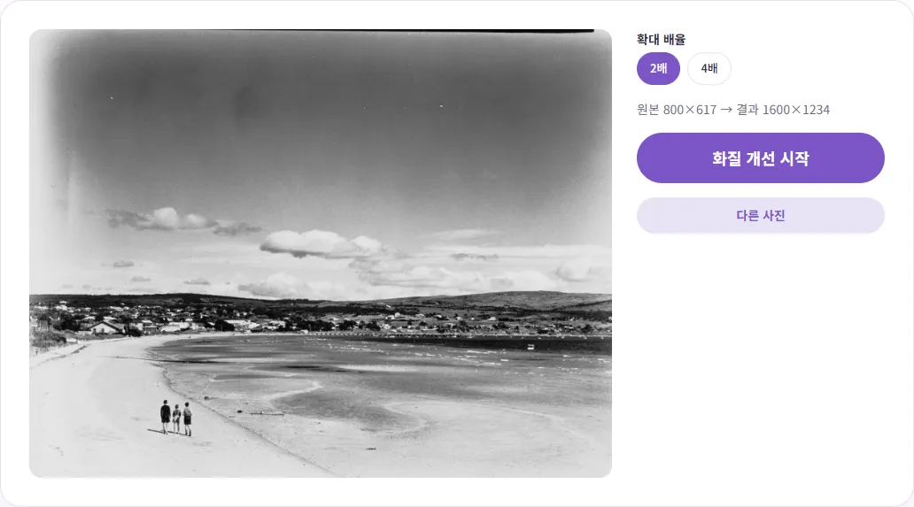
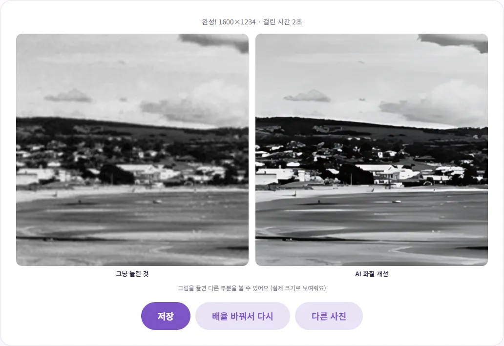
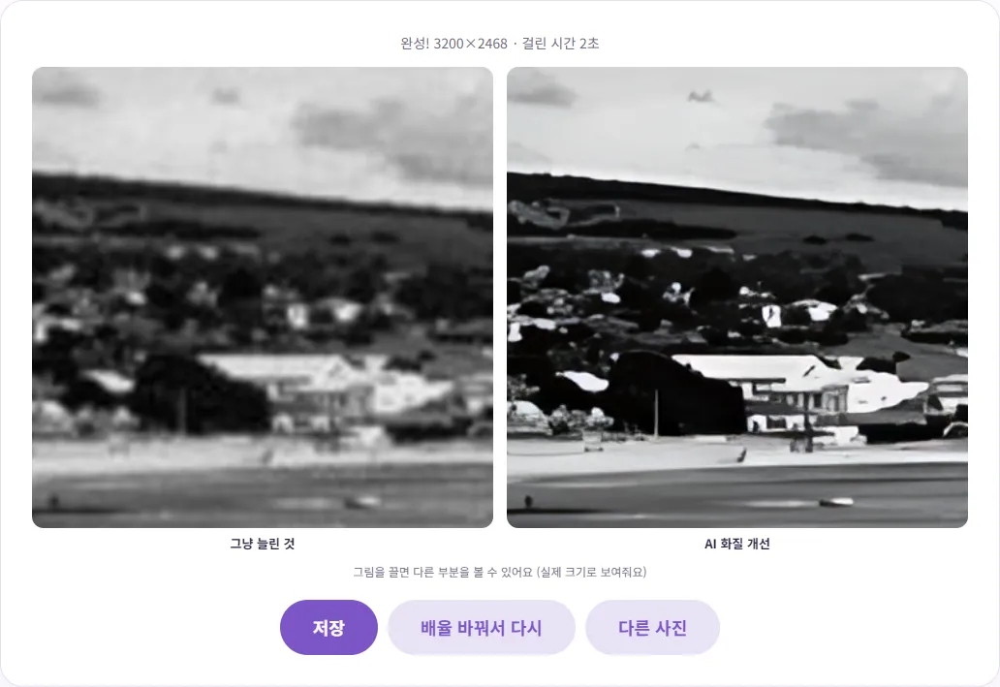

작은 사진·옛날 사진, 화질을 키울 수 있을까요?
오래전 찍은 사진이나 메신저로 받은 작은 사진을 크게 쓰려니 뿌옇게 번져서 속상하셨죠? 이 글에서는 AI 확대가 그냥 늘리기와 무엇이 다른지, 어떤 사진에 효과가 크고 어떤 사진엔 기대하면 안 되는지, 실제로 해 본 결과와 걸린 시간까지 알려 드릴게요.
그냥 늘리기와 AI 확대는 뭐가 다를까요?
작은 사진을 그림판이나 뷰어에서 크게 늘리면 픽셀 사이를 주변 색의 평균으로 채워요. 그래서 크기는 커져도 경계가 번지고 전체가 뿌옇게 보여요. 원래 사진에 없던 정보는 생기지 않으니까요.
AI 확대는 수많은 사진으로 학습한 모델이 '이런 흐릿한 모양은 원래 이런 선명한 모양이었을 것'이라고 추측해서 그려 넣어요. 벤토툴 AI 화질 개선·확대는 Real-ESRGAN 계열의 일반 사진용 모델(realesr-general-x4v3)을 써요. 경계를 또렷하게 세우고 자글자글한 노이즈를 걷어 내는 데 강해요. 다만 '추측'이라는 점이 중요해요. 너무 작아서 알아볼 수 없던 글자나 얼굴이 실제 모습 그대로 되살아나지는 않아요.
단계별로 따라 하기
- AI 화질 개선·확대를 열고 사진을 올리세요. 옛날 종이 사진이라면 먼저 휴대폰으로 반듯하게 찍거나 스캔해서 파일로 만들어 두세요.
- '2배' 또는 '4배'를 고르세요. 오른쪽에 '원본 800×617 → 결과 1600×1234'처럼 결과 크기가 미리 보여요.
- '화질 개선 시작'을 누르면 사진을 작은 조각으로 나눠 차례로 처리하고, 진행률과 남은 시간을 보여 줘요.
- 끝나면 '그냥 늘린 것'과 'AI 화질 개선'이 같은 부분을 실제 크기로 나란히 보여 줘요. 그림을 끌어서 여러 곳을 비교한 뒤 '저장'을 누르세요.

테스트에는 오래된 흑백 필름으로 찍은 퍼블릭 도메인 해변 사진을 800×617 크기로 줄여서 썼어요. 오래된 앨범 사진을 작게 스캔한 상황을 흉내 낸 거예요.
종이 사진을 파일로 만들 때 요령
AI 확대의 결과는 처음 넣는 파일의 상태에 크게 좌우돼요. 앨범 속 종이 사진을 휴대폰으로 찍는다면 몇 가지만 지켜도 결과가 훨씬 좋아져요.
- 비닐 앨범에서 꺼내서 찍으세요. 비닐 위로 찍으면 조명 반사와 비닐 주름까지 함께 확대돼요.
- 낮의 창가처럼 고르게 밝은 곳에서, 휴대폰을 사진과 평행하게 들고 찍으세요. 비스듬히 찍으면 사진이 사다리꼴로 찌그러져요.
- 사진이 화면을 꽉 채우도록 가까이 찍되, 초점이 맞았는지 확인하세요. 흔들려서 흐린 사진은 AI도 되살리기 어려워요.
- 찍은 뒤 이미지 자르기로 사진 바깥의 책상이나 앨범 테두리를 잘라내고 넣으세요. 불필요한 부분이 없어야 크기 한도 안에서 사진 자체를 더 크게 키울 수 있어요.
직접 해 본 결과와 걸린 시간
| 배율 | 결과 크기 | 저장 용량(JPG) | 그래픽 가속 | CPU |
|---|---|---|---|---|
| 2배 | 1600×1234 | 약 300KB | 약 2초 | 1분 6초 |
| 4배 | 3200×2468 | 약 927KB | 약 2초 | 1분 10초 |
원본 파일은 약 78KB였어요. 같은 PC의 크롬에서 그래픽 가속(WebGPU)을 켠 경우와 끈 경우를 각각 쟀어요. 차이가 30배가 넘어요. 그래픽 가속이 안 되는 기기에서는 도구가 'CPU로 처리해요. 몇 분 걸릴 수 있어요'라고 미리 알려 주니, 그 문구가 보이면 여유를 두고 기다리세요. 진행 중에 '그만하기'로 멈출 수도 있어요.
2배와 4배의 시간이 거의 같은 이유도 있어요. 이 도구는 항상 4배로 키운 뒤, 2배를 고르면 그 결과를 절반으로 줄여서 만들어요. 그러니 2배를 고른다고 더 빨라지지는 않아요.

효과가 큰 사진, 작은 사진
2배 결과는 꽤 만족스러웠어요. 필름 입자 때문에 자글자글하던 하늘이 매끈해지고, 집 지붕과 언덕 능선이 또렷해졌어요. 그런데 같은 사진을 4배로 키워 확대해 보니 이야기가 달라졌어요. 멀리 있는 작은 집과 나무가 수채화처럼 뭉쳐서, 사진이라기보다 그림처럼 보였어요.

| 효과가 큰 경우 | 효과가 작거나 어색한 경우 |
|---|---|
| 원본이 작은 사진(가로 1000픽셀 안팎) | 이미 큰 휴대폰 원본 사진 |
| 건물, 사물, 큰 글씨처럼 경계가 뚜렷한 것 | 머리카락, 잔디, 피부 결처럼 고운 질감 (매끈하게 뭉개질 수 있어요) |
| 노이즈나 압축 얼룩이 낀 사진 | 원본에서 몇 픽셀밖에 안 되는 얼굴이나 작은 글자 |
| 2배 정도의 적당한 확대 | 아주 작은 사진을 4배로 크게 |
정리하면, 4배를 고르기 전에 2배 결과부터 보세요. 결과 화면의 '배율 바꿔서 다시'를 누르면 같은 사진으로 바로 다른 배율을 해 볼 수 있어요. 인물 사진은 특히 얼굴을 확대해서 꼭 보세요. 피부가 지나치게 매끈해지거나 눈매가 달라 보이면 2배로 낮추는 게 나아요.
사진 크기 제한이 있어요
브라우저에서 돌아가는 만큼, 너무 큰 사진은 먼저 줄인 뒤 키워요. 도구에 정해진 한도는 이래요.
| 환경 | 2배 | 4배 |
|---|---|---|
| 그래픽 가속 | 원본 약 400만 화소까지 | 원본 약 100만 화소까지 |
| CPU | 원본 약 100만 화소까지 | 원본 약 100만 화소까지 |
예를 들어 휴대폰으로 찍은 4032×3024 사진(약 1,200만 화소)을 그래픽 가속 환경에서 4배로 하면, 먼저 1154×866으로 줄인 뒤 4배로 키워서 4616×3464가 돼요. 원본보다 조금 커질 뿐이고, 한 번 줄였다 키우는 과정에서 원래 있던 디테일을 잃을 수 있어요. 이미 큰 사진에는 이 도구가 맞지 않다는 뜻이에요. 사진이 한도보다 크면 설정 화면에 '사진이 커서 ○×○로 줄인 뒤 키워요'라는 안내가 뜨니 꼭 확인하세요. 얼굴 하나만 크게 쓰고 싶다면 이미지 자르기로 필요한 부분만 잘라서 넣으면 한도 안에서 더 크게 키울 수 있어요.
인화하거나 상세페이지에 쓸 때
인화용
인쇄할 때 흔히 쓰는 300dpi(1인치에 점 300개) 기준으로 계산하면, 4×6인치(약 10×15cm) 사진은 1800×1200 픽셀이 필요해요. 이번 테스트의 2배 결과(1600×1234)는 이보다 조금 모자라고, 4배 결과(3200×2468)는 충분해요. 다만 숫자를 채웠다고 끝이 아니라, 4배 결과에서 봤듯 그림처럼 변한 부분이 인화하면 더 눈에 띌 수 있어요. 인화 업체마다 권장 해상도가 다르니 업체 안내도 함께 확인하세요.
쇼핑몰 상세페이지용
예전에 작게 찍어 둔 제품 사진을 크게 써야 할 때도 쓸 만해요. 다만 AI가 제품의 글자, 로고, 섬유 결을 실제와 다르게 그려 넣을 수 있어요. 판매용 사진이라면 확대한 뒤 제품 정보가 실제와 같게 보이는지 꼭 확인하세요. 상품 사진 배경을 정리하는 방법은 상품 사진 흰 배경 만들기에 정리해 두었어요. 키운 사진이 업로드 용량 제한에 걸리면 이미지 용량 줄이기로 가볍게 만들면 돼요.
결과는 JPG 사진이면 JPG(품질 95)로, PNG·WEBP는 같은 형식으로 저장되고 파일 이름 끝에 '_x2', '_x4'가 붙어요. 원본은 그대로 남아 있으니 마음에 안 들면 다시 하면 돼요.
참고한 자료
- Real-ESRGAN (도구에 쓰인 AI 확대 모델, 영문)
- Chrome for Developers - Chrome ships WebGPU (크롬 113 WebGPU 기본 지원, 영문)
글에서 소개한 도구, 회원가입 없이 바로 써 보세요.
🔍 AI 화질 개선·확대 바로 쓰기